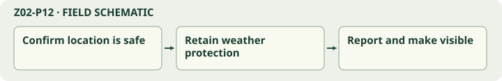

Z02-P12 · Shelter and housing
Use a stranded vehicle as shelter
Keep weather protection and visibility when winter travel is interrupted.
When it applies · Stranded vehicle in a winter storm with no immediate fire, roadway or other vehicle hazard.
Equipment · Dry layers, emergency supplies, communications and a visibility marker if available.

Actions
- If no safe nearby destination is obvious, stay with the vehicle. Report your location, vehicle and people to emergency services or your contact.[E14, T06]
- Use available dry insulation and make the vehicle visible without exposing yourself to traffic or the storm.[E14, E05, ED]
- Keep the group together and reassess if the vehicle location becomes dangerous. Follow responder directions.[E14, T02, ED]
Verify · Somebody can describe the vehicle's position and how rescuers will recognize it.[T06, ED]
Stop or change course · Suspected carbon monoxide exposure requires fresh air and emergency help. Use the safest accessible route away from immediate hazards.[C07, T01]
Evidence and editorial notes
- C07 · CPSC · Carbon Monoxide Fact Sheet
- CO poisoning symptoms; what to do if suspected · Suspected carbon monoxide exposure
Escape to fresh air immediately and contact emergency services. Symptoms can include headache, dizziness, nausea and confusion.
Primary source · checked 2026-11-24 - E05 · NWS · What To Do If You're Caught in a Winter Storm
- Outside and find shelter · Cold, wet or windy winter conditions
Block wind, stay dry and keep off cold ground. Keep exposure reduction separate from making a fire.
Primary source · checked 2026-11-24 - E14 · NWS · What To Do If You're Caught in a Winter Storm
- In vehicles during a winter storm · Vehicle stranded in winter weather with no immediate vehicle hazard
Stay with the vehicle if a safe nearby destination is not obvious. Make the vehicle visible and notify others when possible.
Primary source · checked 2026-11-24 - T01 · American Red Cross · First Aid Steps
- First Aid Steps > Check the scene; check the person · Lay responder in United States; assess safety before contact
Check scene safety, responsiveness, breathing and immediately life-threatening conditions.
Primary source · checked 2026-11-24 - T02 · American Red Cross · First Aid Steps
- First Aid Steps > Call 9-1-1 · Lay emergency response to unresponsiveness, abnormal breathing or severe bleeding
Activate EMS and get needed equipment. Follow dispatcher directions and act within training.
Primary source · checked 2026-11-24 - T06 · NPS · Outdoor Emergency Plan
- If you get lost or hurt; call for help · Outdoor US emergency
Communicate location, last known point, situation and needs. Stay put when unable to establish a safe route unless immediate danger requires movement.
Primary source · checked 2026-11-24
Source lineage · NWS winter storm guidance; new manuscript.